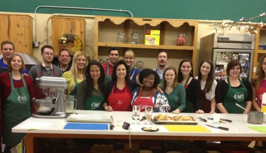
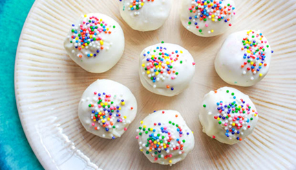
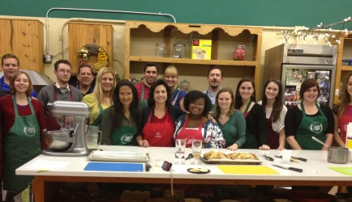
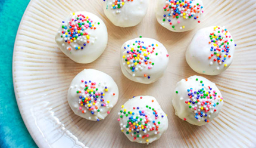

Cooking Classes & Group Events
Looking for a fun evening, morning, or afternoon? Bring your group to Truffles and Trifles for a cooking class. Whether for a brunch class, a luncheon, or an evening party, we can help you entertain your clients, have a spouse program, or just have a fun time with friends and family. We can guarantee a unique and special time. We specialize in Business Team Building events and have had groups ranging from the Orlando Sentinel Editors to Charles Schwab to Disney Directors and spouse groups of every variety you can imagine. We meet with you and discuss a menu that will compliment your group and what they will want to learn. Each attendee will get a booklet with tips and recipes. We can have up to 50 people for hands on or up to 65 for a demonstration in our shop. Off premise classes are also available.
In addition to our classes we can do amenities for conventions as well as gift baskets. We also do children's parties. We meet with the child and they pick out their favorite menu - including - homemade birthday cake and homemade ice cream. All private parties have a 16-person minimum, including children. Head count of attendees is due 4 days prior to party with balance of monies also due at that time. Cancellation of private parties will be a loss of deposit.
If you just want to attend a regular cooking class (see schedule below) held during the week, just call. You do not need a group. Individuals may sign up for any regularly scheduled class. The minimum number of 16 is only required for a private class.
Cooking Classes Make a Great Gift
Gift certificates are the perfect gift for everyone. A certificate costs $54.00 and allows the student to attend any class except for special wine dinners. Certificates are valid for 6 months from the time of purchase. A perfect gift for any occasion.
When purchasing a gift certificate, if mailed it will come in an envelope. If you pick up in person, we will put in a box with a pretty bow. Web site is listed on gift certificate to allow those who receive gift certificates to check which classes they would be interested in taking. We do not print out schedules with gift certificates because we sell classes out so quickly that they become obsolete almost immediately.
Spouse Programs
For 27 years, Truffles and Trifles has been one of the leaders in the country for spouse programs. One of the reasons is that we are a tourist destination. Coming to Truffles and Trifles not only gives the wives a break from the routine of meetings, but a chance to bond with the wives of other executives and to learn some wonderful ways to entertain, which fits perfectly into their lives. We give each group the opportunity to pick their own menus and the style of cooking they would like to learn.
Our state of the art kitchen is filled with top of the line equipment. Our sponsors Sub Zero and Wolf stoves have supplied us with the very latest in equipment that will make your cooking experience with us, even more special. We have 14 cook tops, 19 ovens, 8 refrigerators, 3 freezers, a commercial deep fryer, and 2 in-door grills and 2500 square feet of cooking space in one kitchen and 900 square feet in another to not only accommodate large groups but enough room to allow each group to do hands-on cooking.
We have been featured on CNN, CBS morning and evening news, NBC Today Show, Fox Broadcasting, PBS stations, Rachel Ray Show (up-coming), Ivanhoe Broadcasting, all local stations in Orlando, Daytona and Miami as well as numerous publications. Our kitchen has been featured in movies, commercials and special television series.
It is our aim to make people leave with a lifetime memory to add to their special Orlando experience.
Team Building
Businesses from across the world have been coming to Truffles and Trifles for 27 years. Businesses such as: American Express, Bristol Myers, Johnson & Johnson, Hershey, Chep, Siemens, Lockheed-Martin, Cargill, Ritz Carlton, Raymond James, Cadbury, Exxon Mobile, Disney, Universal, Fidelity, Zero Chaos, State Farm, Marriott, Starwood, Pulte Homes, Novaris, Wyndam Hotels, Charles Schwab, The Orlando Sentinel, SunTrust, IBM, Chase Banks, Florida Gas Transmissions, and too many law firms to mention. These are just some of the businesses who have chosen to bring groups to Truffles and Trifles to experience our unique team building experience.
Your group can hold a meeting first and then prepare a meal designed especially for your group.
Our state of the art teaching kitchens are equipped with 14 cooktops, 19 ovens, 8 refrigerators, 3 freezers, a commercial deep fryer and 2 indoor gas grills, along with 4 large grills used outside. We have 2500 square feet in one kitchen and 900 in our commercial teaching kitchen. This space not only make it possible to accommodate large groups but to do actual hands-on cooking, which makes the experience not only challenging but great fun and requires working together a necessity.
Our team building experience creates cooperation and social interaction with group members. Outcome: Elevating team spirit and morale. Finding the winning balance between planning and execution. Creating an environment that allows team members to get to know each other better Creates a purpose in expertise, precision and creativity. Creating a meal brings out leadership skills that are put into action with the end result being an amazing meal, whether your members have cooked in the past or never cooked at all. This Team building experience will produce an unforgettable and delicious culinary team building adventure.
Truffles and Trifles has created a magical place to create and foster business relationships that help build morale and business friendships that are essential to every business. You can also bring clients to experience the fun and build better relationships with them.
Cancellation Policy: There is a 72 HOUR Cancellation Policy. If you cancel 72 hours prior to the class you will either be given a credit for another class or receive your money back. However if you cancel within the one week there will be no refund. We wish it could be otherwise, but by that time all of the foods and recipes are bought and written. We will send you copies of the recipes upon your request if you are unable to attend and cancel within the 72 hour framework. This also holds true for gift certificates. When you register for a class, and you have a gift certificate, we request that you mail it to us within 72 hours of registering. The exception to this rule is DATE NIGHT AND TECHNIQUES - FOR DATE NIGHT AND TECHNIQUES THERE IS A FULL TWO WEEK CANCELLATION POLICY.